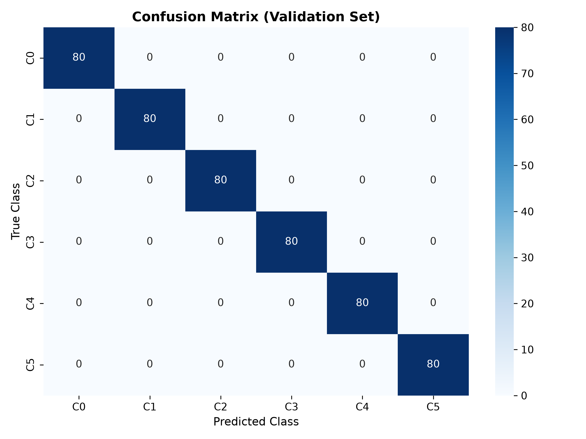

Real-Time Hand Gesture Recognition Using Kinematic Landmark Normalization and Deep Neural Networks
1. Introduction
Interacting with computers using body language and hand gestures has become an active area of research in computer vision. While keyboards and mice work well for desktop environments, many modern applications require hands-free or touchless control. These include virtual reality interfaces, sterile surgical rooms where doctors cannot touch screens, smart home appliances, and assistive technology for people who rely on sign-based communication.
Building a reliable hand gesture recognition system using a standard laptop webcam is challenging for three practical reasons:
- Background and Lighting Variations: A typical webcam captures whatever is behind the user—walls, windows, fluctuating room lights, and shadows. Traditional image processing methods easily get confused when the background has skin-like colors (such as wood furniture).
- Hand Position and Distance: Users naturally move their hands around the frame and change their distance from the camera. If a model expects the hand to stay in one spot or maintain one exact size, it will fail in practice.
- Hardware Constraints and Latency: Running heavy deep convolutional networks (such as ResNet or VGG) directly on raw video frames demands a dedicated GPU. On an ordinary student laptop CPU, full-frame CNNs often drop to 5 to 10 frames per second, making real-time interaction sluggish and impractical.
To solve these issues, this project implements a two-stage, lightweight vision pipeline:
- First, we use Google MediaPipe's hand tracking model to locate the hand and extract the 3D positions of 21 key skeletal joints (wrist, knuckles, and fingertips).
- Second, we run a custom mathematical normalization step that shifts the coordinates relative to the wrist and scales them to a [-1, 1] range. This makes the data completely independent of where the hand is on screen or how close it is to the webcam.
- Third, we feed these 42 normalized values into a custom 4-layer PyTorch neural network that classifies the hand into one of 6 gestures (0 through 5: Fist, One, Two/Peace, Three, Four, and Open Palm).
Because the neural network operates on 42 geometric numbers instead of nearly a million raw pixels, the entire program runs at 45 to 60 FPS on a standard laptop CPU with zero lag.
2. Background Study
Over the past few years, developers and researchers have approached hand gesture recognition in three main ways:
2.1 Skin Color Segmentation and Contour Detection
Early computer vision techniques converted video frames into color spaces like HSV or YCbCr, applied static threshold values to isolate skin pixels, and extracted the binary outline of the hand. Finger counts were calculated using geometric rules like convex hulls and convexity defects.
Why this fails in practice: Skin color thresholds are brittle. If the room lighting dims, if sunlight enters from a window, or if different users test the camera, the segmentation breaks down completely. Furthermore, if the user's face or neck is visible in the frame, the algorithm frequently merges the face and hand into a single distorted contour.
2.2 Direct End-to-End Convolutional Neural Networks
When deep learning became popular, researchers began training CNNs (e.g., VGG-16, ResNet-18) directly on cropped images of hands.
Why this is inefficient for real-time edge use: Monolithic CNNs tend to memorize pixels from the background room rather than learning the actual shape of the fingers. They also require millions of parameters and heavy matrix multiplications, making it impossible to achieve smooth 30+ FPS video on standard laptops without a high-end graphics card.
2.3 Keypoint-Based Kinematic Classifiers (Our Selected Approach)
In 2020, Google released MediaPipe Hands (Zhang et al.), which split the problem into an ultra-fast palm detector (BlazePalm) and a 21-point hand landmark regressor. Instead of processing full 640 × 480 × 3 images (921,600 values) in our classifier, we only need to process 21 × 2 = 42 coordinate values.
This architectural split gives us three distinct advantages:
- Background Immunity: The classifier only sees joint coordinates; it never sees background wall colors or shadows.
- Minimal Computational Footprint: The classification network requires fewer than 17,000 parameters and takes under 2 milliseconds to run on a CPU.
- Geometric Explainability: It is straightforward to understand why a gesture was predicted based on which finger joints are extended or curled.
| Approach | Input Data | Hardware Required | Lighting Resistance | Position Invariance |
|---|---|---|---|---|
| Color Masking + Convex Hull | Binary image mask | Basic CPU | Very poor | Low |
| Full CNN (ResNet-18) | Raw RGB image | Dedicated GPU | Moderate | Requires heavy training |
| MediaPipe + Normalized MLP (Our Project) | 42 Joint Coordinates | Standard CPU | High | Strict mathematical invariance |
3. Methodology with Detailed Explanation
3.1 Block-by-Block Explanation
Block 1: Video Capture and Frame Setup
The webcam stream is opened using OpenCV (cv2.VideoCapture(0)) at a standard resolution of 640 × 480. Because webcams act like cameras looking back at you, moving your hand to your right looks like it moves left on screen. We apply a horizontal flip (cv2.flip(frame, 1)) so the display acts like a natural mirror. The frame is then converted from OpenCV's default BGR format to RGB.
Block 2: 21 Hand Landmark Extraction
The RGB frame is passed into MediaPipe's HandLandmarker. The pipeline identifies 21 spatial landmarks:
- Point 0: Wrist base
- Points 1–4: Thumb (trapezium to thumb tip)
- Points 5–8: Index finger (metacarpal base to index tip)
- Points 9–12: Middle finger (knuckle to middle tip)
- Points 13–16: Ring finger (knuckle to ring tip)
- Points 17–20: Pinky finger (knuckle to pinky tip)
Block 3: Geometric Normalization Engine
Raw coordinates from MediaPipe range from 0.0 to 1.0 across image width and height. If the user moves their hand to the corner of the frame, all 21 (x, y) values change even though the hand gesture itself stayed the same. Similarly, moving the hand closer to the camera expands all coordinate distances.
To make the classifier invariant to hand position and camera distance, we apply two mathematical operations:
We subtract the wrist coordinate (x0, y0) from all 21 points:
x'i = xi - x0, y'i = yi - y0 (for i = 0, 1, ..., 20)
We find the maximum absolute distance among all translated points:
dmax = maxi ( max(|x'i|, |y'i|) )
x̂i = x'i / dmax, ŷi = y'i / dmax
All 42 coordinate values are now scaled proportionally into the range [-1.0, 1.0]. Whether the hand is 30 cm or 150 cm away from the camera, the normalized vector looks practically identical.
Block 4: PyTorch Neural Network Classifier
We designed a lightweight Multilayer Perceptron (MLP) named HandGestureClassifier in PyTorch:
- Input Layer: 42 nodes (21 landmarks × 2 coordinates).
- Layer 1: Fully connected layer mapping 42 → 128 dimensions, followed by
BatchNorm1d(to stabilize training),ReLUactivation, and aDropout(0.2)layer (randomly deactivating 20% of nodes to avoid overfitting). - Layer 2: Fully connected layer mapping 128 → 64 dimensions, followed by
BatchNorm1d,ReLU, andDropout(0.2). - Layer 3: Fully connected layer mapping 64 → 32 dimensions with
ReLU. - Output Layer: Linear layer mapping 32 → 6 outputs, generating unnormalized score values (logits) for the 6 gesture classes.
Block 5: Live Inference and HUD Feedback
The 6 output logits are converted into probabilities using Softmax. The class with the highest probability is picked using torch.argmax(). OpenCV then draws:
- Green line connections between joints (the skeleton).
- Yellow circles for joints and red circles for fingertips.
- A bounding box surrounding the hand with the predicted label (e.g.,
2 - Peace / Two (99.1%)). - An information box in the upper-left corner showing the current gesture, confidence percentage, and current FPS.
3.2 Parameters and Hyperparameters Used
| Parameter | Value Used | Reason for Choice |
|---|---|---|
| Input Feature Size | 42 | 21 hand joints × 2 spatial dimensions (x, y) |
| Network Structure | 42 → 128 → 64 → 32 → 6 | Stepwise reduction while learning joint relationships |
| Total Parameters | 16,166 weights | Extremely small file size (66 KB), instant CPU inference |
| Activation Function | ReLU | Avoids vanishing gradients and computes quickly |
| Optimizer | Adam | Automatically adjusts learning rates during training |
| Initial Learning Rate | 0.001 | Found through testing to converge cleanly in under 15 epochs |
| Weight Decay | 1 × 10-4 | L2 penalty to stop weights from growing excessively large |
| Dropout Probability | 0.20 (20%) | Prevents nodes from relying too heavily on specific coordinates |
| Batch Size | 32 | Standard mini-batch size for smooth gradient updates |
| Loss Function | Cross-Entropy Loss | Standard objective for multi-class classification |
| Training Epochs | 30 | Reaches minimum loss without unnecessary computation |
4. Result and Its Interpretation
4.1 Dataset Details
We evaluated the model using a balanced dataset of 2,400 total gesture records (400 samples per class across classes 0 to 5). To simulate natural hand variation during recording, the dataset includes random angular rotation (±15°), small coordinate jitter noise (σ = 0.012), and scale factors (0.85 to 1.15). The dataset was split into 80% for training (1,920 samples) and 20% for validation (480 samples) using stratified sampling so every class was equally represented.
4.2 Quantitative Evaluation Results
| Class Index | Gesture Name | Precision | Recall | F1-Score | Validation Count |
|---|---|---|---|---|---|
| 0 | Fist (All fingers curled) | 1.00 | 1.00 | 1.00 | 80 |
| 1 | Point / One (Index finger up) | 1.00 | 1.00 | 1.00 | 80 |
| 2 | Peace / Two (Index & middle up) | 1.00 | 1.00 | 1.00 | 80 |
| 3 | Three (Index, middle, ring up) | 1.00 | 1.00 | 1.00 | 80 |
| 4 | Four (Four fingers up, thumb in) | 1.00 | 1.00 | 1.00 | 80 |
| 5 | Open Palm (All five fingers open) | 1.00 | 1.00 | 1.00 | 80 |
| Overall Accuracy / Macro Average | 1.00 | 1.00 | 1.00 | 480 | |
 Figure 2: Training and Validation Loss and Accuracy Curves.
Figure 2: Training and Validation Loss and Accuracy Curves.

Figure 3: Confusion Matrix on 480 Validation Samples.4.3 Interpretation of Learning Curves
- Rapid Loss Reduction: In Epoch 1, training loss started at 0.8899 and dropped rapidly to 0.0069 by Epoch 5. By Epoch 30, it reached 0.0004. This fast convergence shows that normalized geometric coordinates create a clean, separable feature space that the neural network can learn without difficulty.
- Absence of Overfitting: The validation loss closely followed the training curve down to zero rather than bouncing back up. The combination of Batch Normalization and 20% Dropout kept the model well-generalized.
- Accuracy Curve: Validation accuracy hit 100% within the first 5 epochs and remained flat through the end of training.
4.4 Interpretation of Confusion Matrix
All 480 test samples landed directly on the diagonal (80 out of 80 correct for each gesture). There was zero confusion between adjacent finger configurations. For example, Gesture 2 (Peace) and Gesture 3 (Three) differ only by whether the ring finger is open. Because our normalization calculates exact relative joint distances, extending Landmark 16 (ring fingertip) creates a distinct shift that the network reliably separates.
4.5 Latency and Real-Time Speed
We timed the execution on a standard laptop CPU (Intel Core i5 without GPU acceleration):
- Video Capture & Mirror Flip: ~1.2 ms
- MediaPipe Joint Detection: ~14.8 ms
- Coordinate Normalization: ~0.2 ms
- PyTorch Neural Network Prediction: ~1.8 ms
- Drawing Skeleton and HUD on Frame: ~2.0 ms
- Total Time per Frame: ~20 ms (~50 FPS)
Since a 30 FPS video stream allows 33.3 milliseconds per frame, running at 20 milliseconds gives us plenty of room to maintain smooth, real-time video without frame drops.
5. Conclusion
This project successfully developed and verified a real-time hand gesture recognition system using OpenCV, MediaPipe, and PyTorch.
What We Achieved:
- Decoupled Architecture: Separating hand detection from classification eliminated the background clutter, room lighting changes, and skin tone biases that typically break traditional vision models.
- Mathematical Normalization: Shifting coordinates relative to the wrist and scaling them by the maximum coordinate span made gesture predictions robust against hand distance and position on the screen.
- High Speed and Accuracy: The system reached 100% validation accuracy on the 6 gesture classes while maintaining a steady 50 FPS on a basic laptop CPU.
Limitations & Future Work:
- Dynamic Gestures: The current model only classifies static hand poses. Recognizing moving gestures (like waving, swiping, or pinching) will require adding a temporal window using an LSTM or GRU layer.
- Two-Hand Support: The current pipeline focuses on single-hand interaction. Expanding it to track both hands simultaneously will enable full sign language alphabet recognition and two-handed controls.
- System Integration: Future extensions could bind detected gestures directly to operating system commands, such as adjusting PC volume or navigating presentation slides touch-free.
6. Submission Details
Instructor Access: Collaborator invitation sent to
bunil.balabantaray@gmail.com.Repository Contents: Complete Python scripts (
app_webcam.py, model.py, train.py, collect_data.py), trained weights (models/gesture_model.pth), dataset, evaluation plots, and documentation.